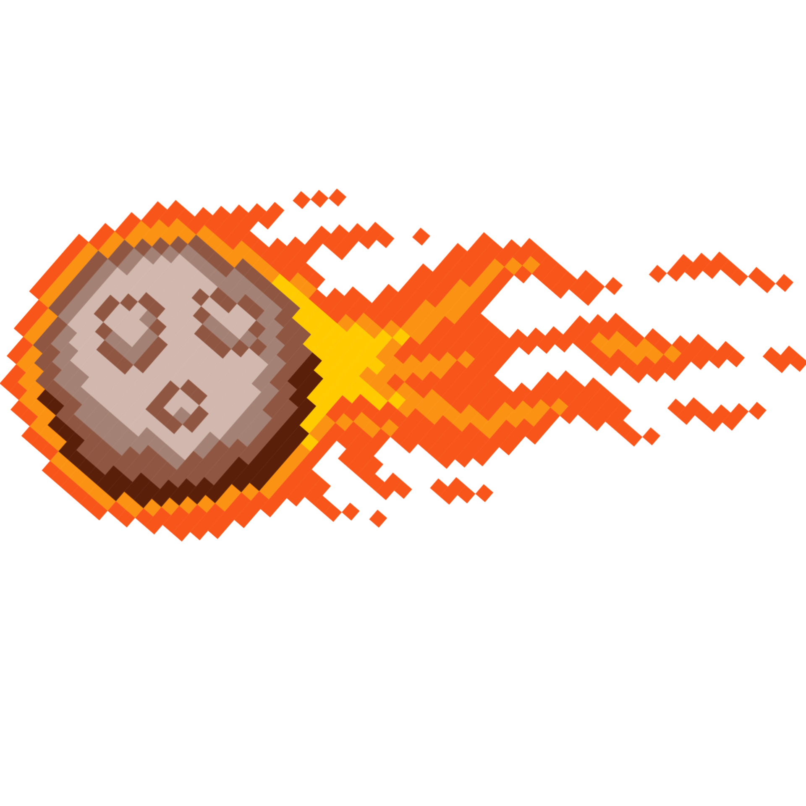
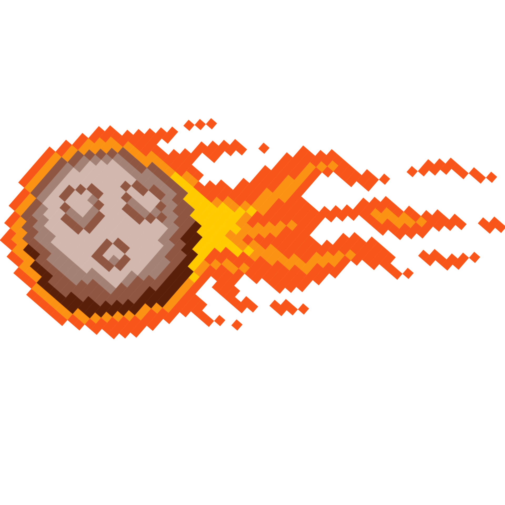

Presentación de Galactic Rex
En Galactix Rex, te sumergirás en una emocionante aventura prehistórica donde asumirás el papel del legendario T-Rex. Tu misión es sobrevivir el mayor tiempo posible mientras esquivas una lluvia de cometas que amenazan tu territorio desde todas las direcciones.
Caracteristicas del Juego
- Desafío Infinito: Enfréntate a un desafío sin fin mientras el T-Rex corre a través de un paisaje cambiante. Los cometas aparecerán tanto vertical como horizontalmente, poniendo a prueba tus reflejos y habilidades de esquiva.
- Puntuación Competitiva: ¡Demuestra tu destreza compitiendo por la puntuación más alta! Cada cometa esquivado suma puntos a tu marcador. ¿Podrás superar tus récords anteriores y convertirte en el rey de Galactix Rex?
- Gráficos Retro: Sumérgete en la nostalgia con gráficos retro que evocan la era de los videojuegos clásicos. Disfruta de un estilo visual simple pero encantador que captura la esencia del juego del dinosaurio de Google.
- Controles Sencillos: Domina los controles simples e intuitivos que te permiten guiar al T-Rex con facilidad. ¡Solo necesitas un botón para saltar y esquivar los cometas que se interponen en tu camino!
Objetivo del Juego
El objetivo en Galactix Rex es simple: ¡sobrevive tanto tiempo como puedas! Cuantos más cometas esquives, más puntos acumularás en tu marcador. Desafía a tus amigos y a ti mismo para ver quién puede alcanzar la puntuación más alta y reclamar el título de maestro de Galactix Rex.
¡Prepárate para una aventura prehistórica llena de emoción y desafíos en Galactix Rex! ¿Tienes lo que se necesita para ser el rey de los dinosaurios? ¡Descúbrelo ahora!
¡Descárgalo ya! 
